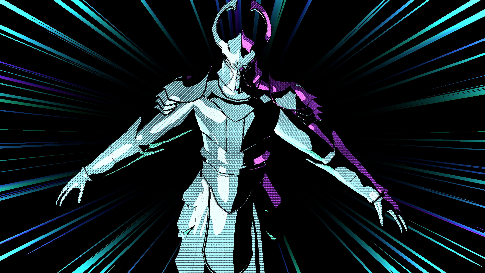
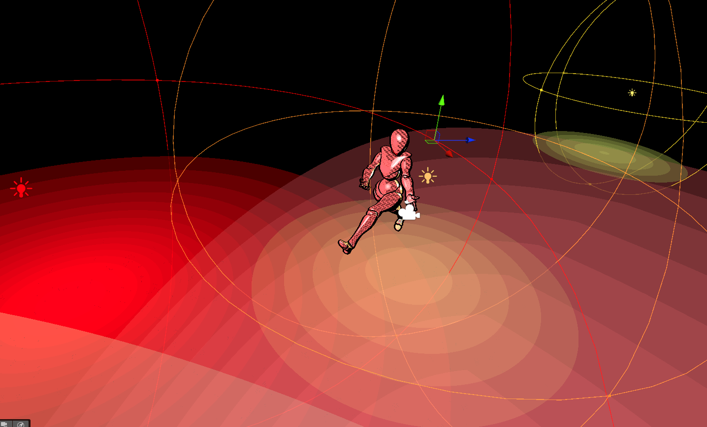
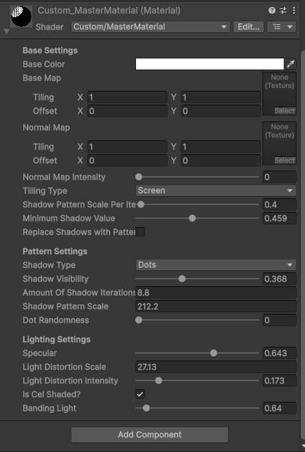
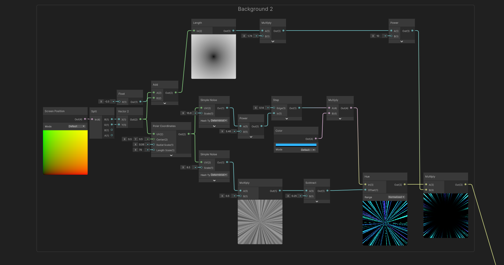
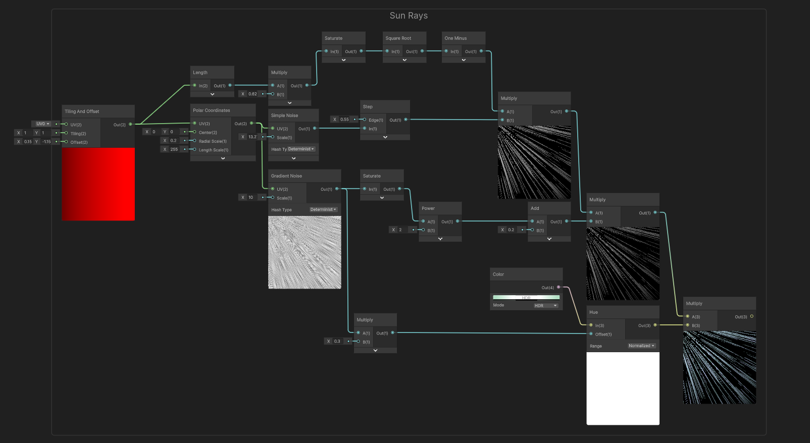
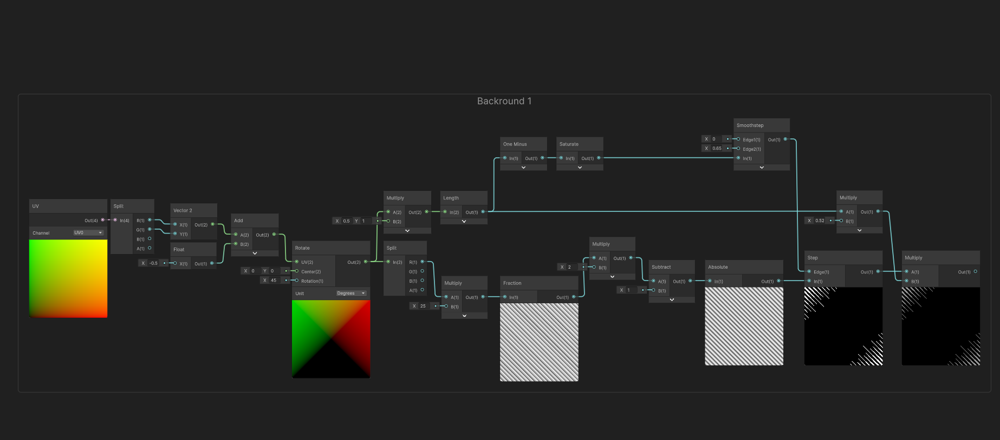

The goal of this project was to develop a master material shader in Unity that achieves a comic-style lighting model. The shader is written in HLSL and uses a custom lighting implementation. It supports cel shading, allows the user to choose between different hatching patterns for shadows, and works with directional, point, and spot lights.



Specifications:
- Engine: Unity 6
- Shader Domain: Surface
- Blending Mode: Opaque
- Default Shading: Unlit
When applied to an object, the shader provides a wide range of adjustable parameters to achieve different stylized looks. It allows the user to choose between two hatching patterns, each with its own configurable properties, as well as four tiling modes and multiple general, lighting-related, and shadow-related parameters.
The shader also supports albedo and normal textures.
Custom parameters supported by the shader:
Hatching Type:
Dots, Hatchings
Tilling Type:
UV, Screen, TriplanarLocal, TriplanarWorld
General:
NormalMapIntensity, TilingType, ShadowScalePerIteration, MinimumShadowValue, ReplaceShadowsWithPattern
Pattern-Specific:
ShadowVisibility, AmountOfShadowIterations, ShadowPatternScale, DotRandomness, DensityOfHatchingLines
Lighting:
Specular, LightDistortionScale, LightDistortionIntensity, IsCelShaded, BandingLight
Lighting calculations are divided into two parts. Directional light handling is relatively straightforward.
By using the GetMainLight() method, the necessary data can be obtained to compute NdL, including cel shading adjustments.
Incorporating point and spot lights proved to be more challenging, mainly due to limited prior experience with Unity's API.
By using the additional light count from GetAdditionalLightsCount() and extracting relevant data from the Light struct,
a modified lighting function—originally used in a custom engine for group projects—was adapted to evaluate their contribution.
In addition, a specular component is calculated and can be enabled or adjusted through exposed parameters.

Point lights being affected by celshading

Exposed parameters
No textures were used to generate the hatching patterns. Instead, a combination of procedural noise and basic shader math was used to create both hatching and dot-based shadow patterns.
These patterns are modulated using lighting information. For example, in the dot pattern, the dots become smaller as the surface approaches brighter areas.
In addition to shadow patterns, subtle surface imperfections are generated using a similar approach to enhance the overall stylized look.
While the comic shader master material is the main focus of this project, several additional features were developed to enhance both the visual quality and usability.
Custom MasterMaterialGUI was implemented to improve parameter organization and usability.
This allowed certain parameters to be shown or hidden dynamically based on user selections.
For example, the "Dot Randomness" parameter is only visible when "Shadow Type" is set to "Dots".
Full-Screen Outline Shader was created using Shader Graph to further enhance the comic-style appearance.
The outline effect is generated by comparing differences in depth and normals across the scene.
A simple Texture Swapper script was developed to allow multiple models using the same shader to easily switch between different albedo and normal textures.
The script can be attached to a model and supports assigning either or both texture types.
Finally, additional fullscreen background shader effects have been created to enchance final renders.


